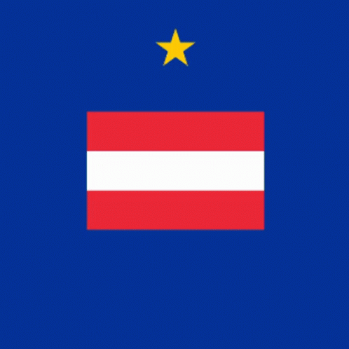
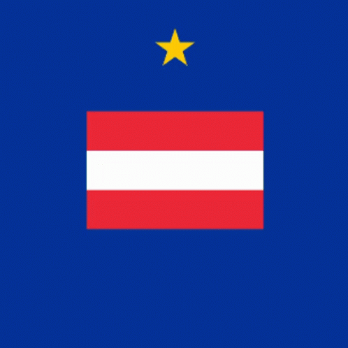

Євро́па — частина світу в Північній півкулі. Омивається Північним Льодовитим океаном на півночі, Атлантичним океаном на заході та Середземним морем на півдні. На сході та південному сході відокремлена від Азії Уральськими та Кавказькими горами, річкою Урал (за іншою версією, Ембою), Каспійським та Чорним морями. Площа — 10 530 000 км2, що становить 2 % площі Землі або 6,8 % суходолу. Третя за кількістю населення частина світу після Азії та Африки (729 млн осіб, 11 % населення Землі). Україна є найбільшою за площею країною Європи, не враховуючи європейську частину Російської Федерації, що є європейсько-азійською країною, та колоніальної частини Франції. Ватикан — найменшою. Окрім географічного значення, може позначати Європейський Союз, європейську цивілізацію, культурну спільноту або європейський геополітичний вибір[1]. Європа разом з Азією утворює Євразію[2].
 

Замок Нойшванштайн розташований поблизу містечка Фюссен у південно-західній Баварії, неподалік від австрійського кордону. Будівництво його було розпочато в 1869 році і тривало 17 років. Це один із найпопулярніших замків Німеччини. Його назва з німецької перекладається як "нова лебедина скеля". Замок щорічно відвідує більше 1 мільйона людей. Побудований в кінці XIX століття за наказом "казкового" короля Людвіга II, він послужив прототипом замку Сплячої Красуні в паризькому Діснейленді. Вже за кілька тижнів після смерті його першого і останнього власника Людвіга II замок відкрили для відвідувачів, щоб хоча б частково компенсувати витрати. Найвеличніше і прекрасніше в інтер'єрі замку - спроектовані за погодженням з Королем Людвігом II королівські покої і просторі зали. Але й поблизу замку Нойшванштайн теж є на що подивитися.
У період з 1945 по 1950 рр. деякі європейські політики, зокрема Робер Шуман, Конрад Аденауер, Альчіде де Гаспері та Вінстон Черчилль, розпочали процес створення Європейського Союзу. Їхнє бачення полягало в економічному та політичному об'єднанні європейських країн заради забезпечення тривалого миру і процвітання.
Хочете знати мову програмування такі як HTML/CSS,Java-Script, і тд